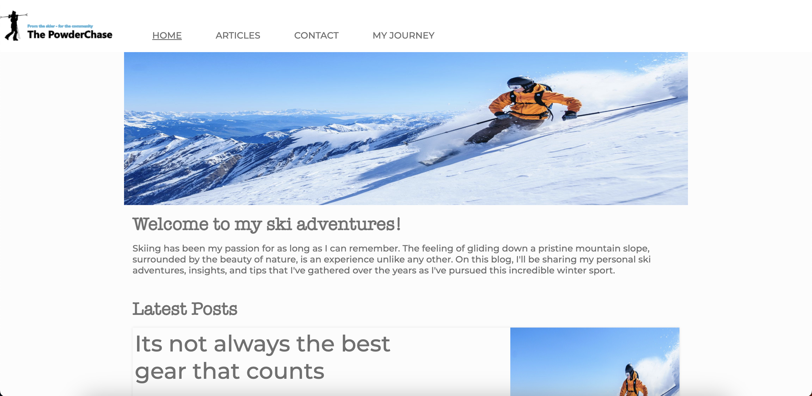
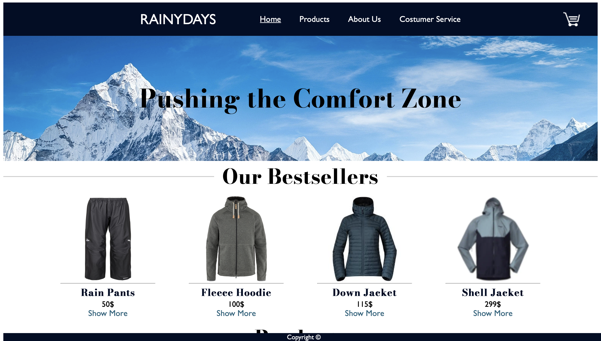

Fredrik Straume
The PowderChase
The PowderChase is a Ski blog, built during the Project Exam at Noroff with an API from WordPress

RainyDays
RainyDays was built during the cross-course project at Noroff, built with WordPress API
My name is Fredrik
Im studying my first year in Front-End Development at NOROFF
My skillset includes
Location